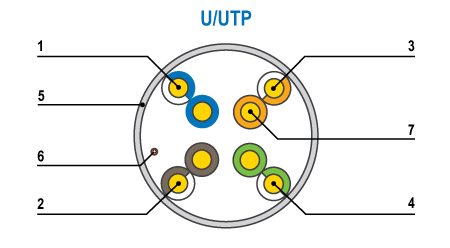
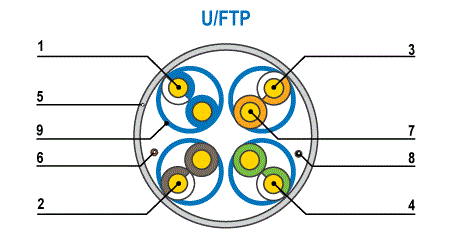
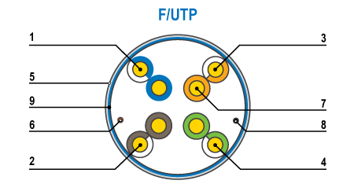
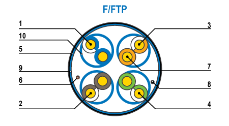
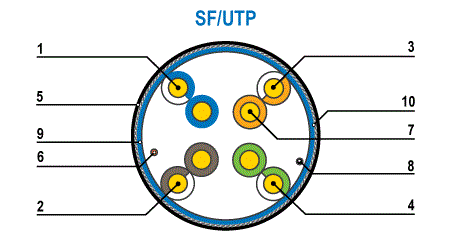
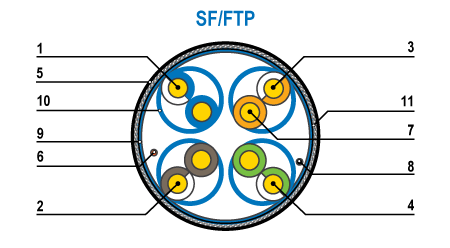
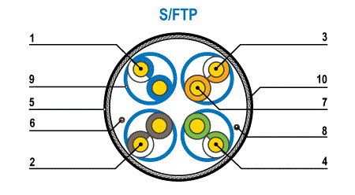
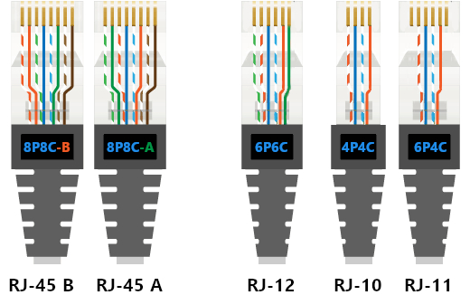
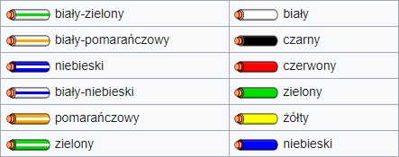

LOKALNE SIECI KOMPUTEROWE / Pasywne elementy składowe sieci
Media transmisyjne - Kabel typu skrętka
"Skrętka" zbudowana jest z czterech par skręconych ze sobą przewodów,dzięki czemu zredukowany zostaje wpływ zakłóceń elektromagnetycznych pochodzących od innych urządzeń lub wzajemnych zakłóceń (tzw. przesłuchy). Najczęściej tego rodzaju kabel stosowany jest w instalacjach telefonicznych czy też sieciach Ethernet.
Klasy skrętki wg norm TIA/EIA 568A oraz europejskiej EN 50173
| TIA/EIA 568A | EN 50173 | Rodzaj złącza | Zastosowaniem | Pasmo |
| kat. 3 | Klasa C |
RJ11 RJ12 RJ45 |
Protokoły ze średnią szybkością bitową, Ethernet 10Base-T | do 16 MHz |
| kat. 4 | --brak-- | RJ45 | Protokoły ze średnią szybkością bitową, Ethernet do 16 Mbit/s | do 20 MHz |
| kat. 5 / 5e | Klasa D | RJ45 |
Protokoły z dużą szybkością bitową np. FastEthernet 100Base-TX,
GigabitEthernet 1000Base-T |
do 100 MHz |
| kat. 6 | Klasa E | RJ45 |
Protokoły z bardzo dużą szybkością bitową, np. ATM622, GigabitEthernet 1000Base-T |
do 250 MHz |
| kat. 6A | Klasa EA | RJ45 |
Protokoły z bardzo dużą szybkością bitową, GigabitEthernet, 10-GigabitEthernet 10GBase-T |
do 500 MHz |
| kat. 7 | Klasa F | GG45 TERA |
Protokoły przyszłościowe, 10GBase-T, transmisja wideo wysokiej
jakości, współdzielenie aplikacyjne kabla (3-play) |
do 600 MHz |
| kat. 7A | Klasa FA | GG45 TERA |
Protokoły przyszłościowe, 10GBase-T, pełne pasmo CATV (862 MHz),
współdzielenie aplikacyjne kabla (3-play), ready for 40G, ready for 100G |
do 1GHz |
Ekranowanie
Zastosowanie ekranowania elektrycznego powoduje, iż sygnał przesyłany za pomocą wewnętrznych żył w mniejszym stopniu ulega zakłóceniom zewnętrznym oraz minimalizuje emisję zakłóceń radiowych. Jednakże stosowanie przewodów ekranowanych wymaga znajomości zasad prawidłowego ekranowania oraz elektrycznych połączeń wyrównawczych budynku. Podstawową zasadą ekranowania jest prawidłowe uziemienie ekranu na obu końcach przewodu. Poniżej przedstawiono rodzaje skrętek.
| Skrętka nieekranowana | Skrętka foliowana |

|

|
| Skrętka z każdą parą w osobnym ekranie z folii |
Skrętka z każdą parą w osobnym ekranie z folii dodatkowo w ekranie z folii |

|

|
| Skrętka ekranowana folią i siatką. |
Skrętka z każdą parą foliowaną dodatkowo w ekranie z folii i siatki |

|

|
|
Skrętka z każdą parą foliowaną dodatkowo w ekranie z siatki |
|

|
Drugi zapis zawiera w sobie budową złącza.
P to skrót od positions (pl.: pozycje) informujący o ilości rowków do których możesz włożyć żyły.
C to skrót od contacts (pl.: styki) informujący o ilości żył stykających się z plaszkami.
Poniżej przedstawiono schamety wtyków RJ w nowoczesnym standardzie kolorystycznym:  Poniżej przedstawiono dwa standardy kolorystyczne nowoczesny i stary stosowane w złączach RJ-11, RJ-12, RJ-14: 